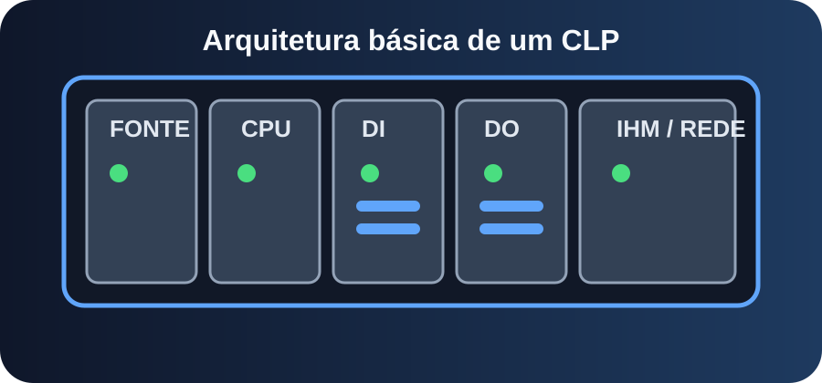
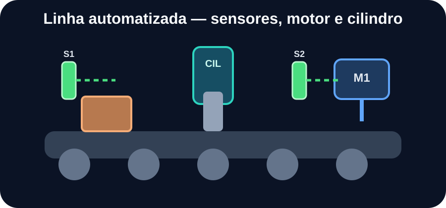
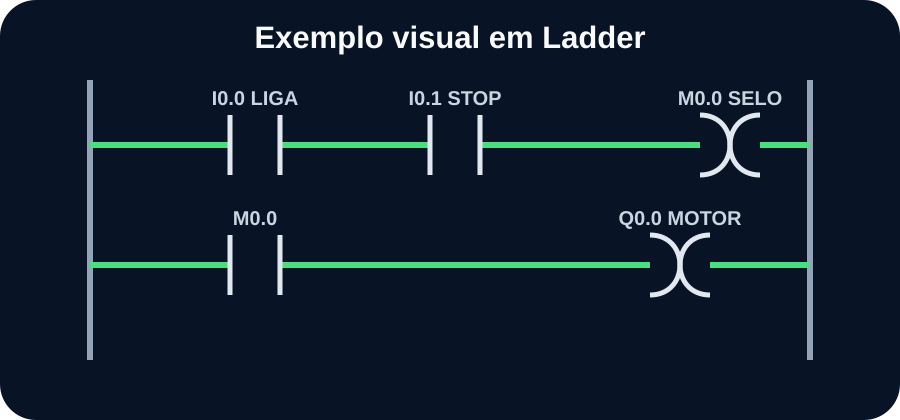

Seu centro de treinamento em automação
Aprenda a identificar entradas e saídas, interpretar Ladder, entrar online com segurança, comparar projetos, entender temporizadores, contadores, redes industriais, IHM e diagnosticar falhas reais.

CLP, I/O, sensores, atuadores e ciclo de scan.
Ladder, selo, intertravamento, TON e CTU.
Diagnóstico, rede, IHM, analógicos e boas práticas.


1. Sensor com LED ligado, mas entrada apagada. Primeiro passo?
2. Antes de alterar programa online?
3. O TON serve para?
4. Saída ativa e motor parado. O que verificar?
Conclua a avaliação com pelo menos 75% para liberar.